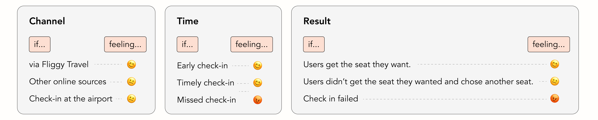

Alibaba | 2021.10-2022.06
Breaking Borders: Designing Seamless Travel with Fliggy
2 developers
Context
In the winter of 2022, I worked at Decathlon as a Product Designer, leading the design of business module system for the internal integration platform. This is my first project when I joined Decathlon. The main challenges were new concept for all stakeholder, the lack of design assets, and the steep learning curve in a new industry.
My role
UX and UI designer, User Researcher
Project Impact
- Increase the success rate of check-in online
- 0-1 establish the knowledge library of localization design in SEA
- make a consistent user experience accross multiple platforms

Introduction
The product I worked on, Fliggy Travel, is an online platform that helps users plan and book their trips end-to-end. Online check-in is a crucial step in the flying journey, yet as Fliggy’s user base grew, the existing flow could no longer accommodate diverse customer needs. This resulted in a noticeably low check-in success rate. To address this, I set out to optimize the online check-in experience—making it more intuitive, reliable, and enabling users to complete their check-in ahead of time with confidence.
A Typical Flow of Booking a Flight

Experience Gaps
Feedbacks collected from the users

User Research
UXR Insights
For the traveller, it is most important that the journey goes without anything wrong, especially in transport. This is because if any issues arise after booking online that will affect the follow-up traveling. The user will immediately lose trust in the platform.
My Findings
In order to avoid üò° feeling from users I think it is acceptable for Fliggy Travel to accept users channeling other platforms for check-in, to avoid possible factors that could affect the user's trip.
Traveler Problems
Fliggy Travel only supports online check-in for some flights. Most flights require online check-in at the airline's website; in a few cases, online check-in is not available and passengers need to check-in at the airport.
Issues
Before we addressing these issues, we need to clarify these concepts.
Design Goals
Help Fliggy
Enhancing the in-trip experience for users who buy tickets
Help Our User
Easy and credible selection of the seat they want
Help the Experience
Retaining users through enhancing the growth of trust of them
Design
Book Your Check-in
Check-in Page
Choose Seat Page
The purpose of this page is to give users a quicker understanding of the differences between the
seats in order to make choice. I have therefore added existing seat parameters as well as I defined
comfort levels.
Flights with an appropriate chair allow the passenger to stretch out, which really does make the
flight more comfortable, such as reclining the seat, the angle of the seat back, longer seat length,
etc.
No Flight
Seat Preference
For users who do not have an order at the moment and need to set their check-in preferences, I have applied the same level of comfort, as well as visualising it.
Before take off
Online check-in
As there are various scenarios after the online check-in opens, I have made the interface to ensure compatibility with this framework.
Results
After two weeks, there was a drop in the number of flights ordered due to the pandemic. I therefore compared the dates with the same ordered volume of flights and there was a positive increase in the success rate of check-in.
What I learned
People are curious about the aviation industry. The aviation industry has many proper nouns and passengers are constantly learning and understanding these words. I wonder how many people really understand these concepts. I believe that as a designer, we should aim to help users enter the real flight experience to get rid of those raw nouns.
Background
Fliggy Travel also has an airline ticket business for overseas users, in Lazada's internal mini-program. Currently Lazada focuses on the Southeast Asian population. In this context, I was responsible for Lazada's online business and research on localisation design for the travel industry for the SEA population.
Internationalization and localization Research
The final design for launch
Reschedule a flight
What I learned
There are different design priorities for different user groups. for example, I always use the RMB symbol ¥ to express money, which may not be understood by the South East Asian, this was because I was not sensitive enough to the user group; therefore, in my subsequent research on the subject, I summarised the points to note in the localised design.